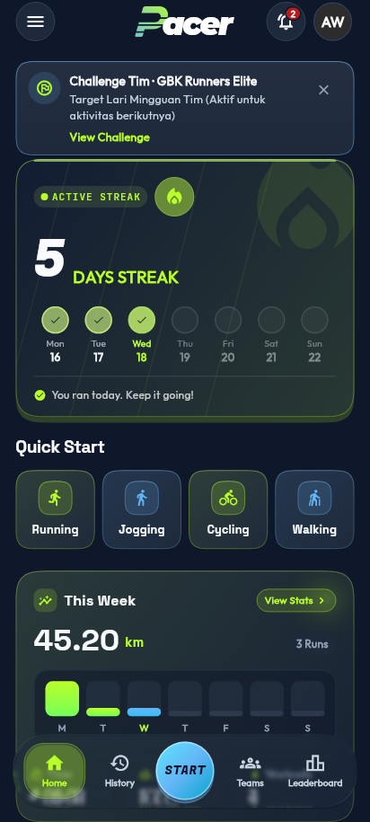

Loading release notes...
Download Pacer for Android
Offline-first GPS tracker for running, jogging, cycling, and walking. Records routes locally to SQLite, syncs with Supabase when online, and ships straight from GitHub Releases.
Checking the latest published GitHub release for Lemondeft/pacer...
v0.2.15
No Android APK is attached to the latest release yet.
Open GitHub Releases to browse previous builds or source archives.
Could not fetch live release metadata from GitHub right now.
You can still open the latest GitHub release directly using the button below.
How to install the APK on Android
- Tap Download Android APK above (or scan the QR code below from your phone camera).
- Open the downloaded
.apkfile from your browser downloads and allow Install unknown apps for your browser when Android prompts. - Launch Pacer. You can sign in, register a new account, or select Try Demo Account to test a pre-populated offline SQLite sandbox without signing up.
Want to test before creating an account? Launch Pacer and tap Try Demo Account on the welcome screen for a pre-populated local SQLite sandbox that resets cleanly on logout.

Scan on your phone
Point your Android camera at the code to open this download page (always up to date) or switch to the direct APK link for the current release.
Verify package & capabilities
Every release APK is published from the public repository with its SHA-256 digest attached in GitHub Releases metadata.
APK SHA-256 Digest
Loading digest from GitHub Releases...
- Supported sports
- Outdoor Running, Jogging, Cycling, and Walking with 5-layer anti-cheat classification and screen-off foreground tracking.
- Offline architecture
- Writes workouts and GPS drafts straight to local SQLite and drains queued mutations to Supabase once connectivity returns.
- Maps & clubs
- OpenFreeMap vector tiles (Light and Dark styles), invite-code teams, realtime team chat, solo and team challenges, and coach grading boards.
- Themes & languages
- Dark, Light, and System appearance, 6 desktop-inspired palettes (Argon, KDE Breeze, Mint-Y Cinnamon, GNOME Adwaita, Ubuntu Yaru, Arch Nord), English and Indonesian.
- License & source
-
GNU General Public License v3.0. Full Flutter client and Supabase SQL migrations are public.
What changed in the latest build
Pulled live from GitHub Releases.
Recent releases
Direct links to recent Android APKs and Linux desktop builds.
- Loading release archive...